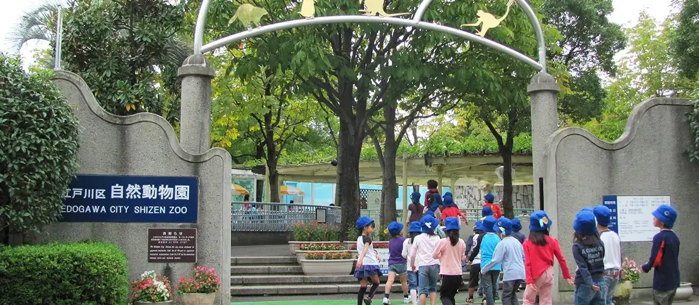
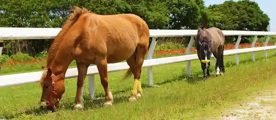
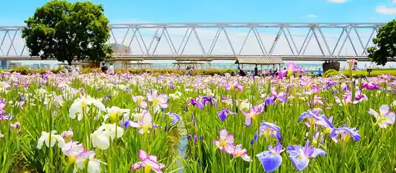
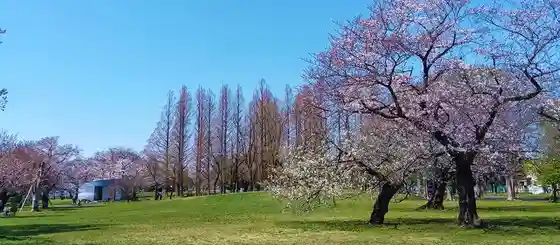

Japan / Tokyo / Edogawa
Edogawa · Tokyo
Edogawa
Highlighted on the Tokyo map.

Edogawa Ward Office
Edogawa Nature Zoo
Edogawa, Tokyo · Official / source link
Shinozaki Ponii Land

Koiwa Shobuen

Shinozaki Park

Kasai Rinkai Park
Kasai Rinkai Suizokuen
Gyo Fune Park
Ukita Park
(Majo no Takkyubin Wo Mochiifu Nishita Kyarakuta) no Dezainmanhoru
← Chuoku · All towns in Tokyo · Fuchushi →
Other towns: Adachi · Akiruno · Akishima · Aogashima · Arakawa · Bunkyo · Chiyodaku · Chofu · Chuoku · Fuchushi · Fussa · Hachijo · Hachioji · Hamura · Higashikurume · Higashimurayama · Higashiyamato · Hino · Hinode · Hinohara · Inagi · Itabashi · Okutama · Katsushika · Kitaku · Kiyose · Kodaira · Koganei · Kokubunji · Komae · Koto · Kozushima · Kunitachi · Machida · Meguro · Mikurajima · Minatoku · Mitaka · Miyakemura · Mizuho · Musashimurayama · Musashino · Nakano · Nerima · Niijima · Nishitokyo · Ogasawara · Ome · Oshima · Otaku · Setagaya · Shibuya · Shinagawa · Shinjuku · Suginami · Sumida · Tachikawa · Taito · Tama · Toshimaku · Toshimamura
Back to all prefectures